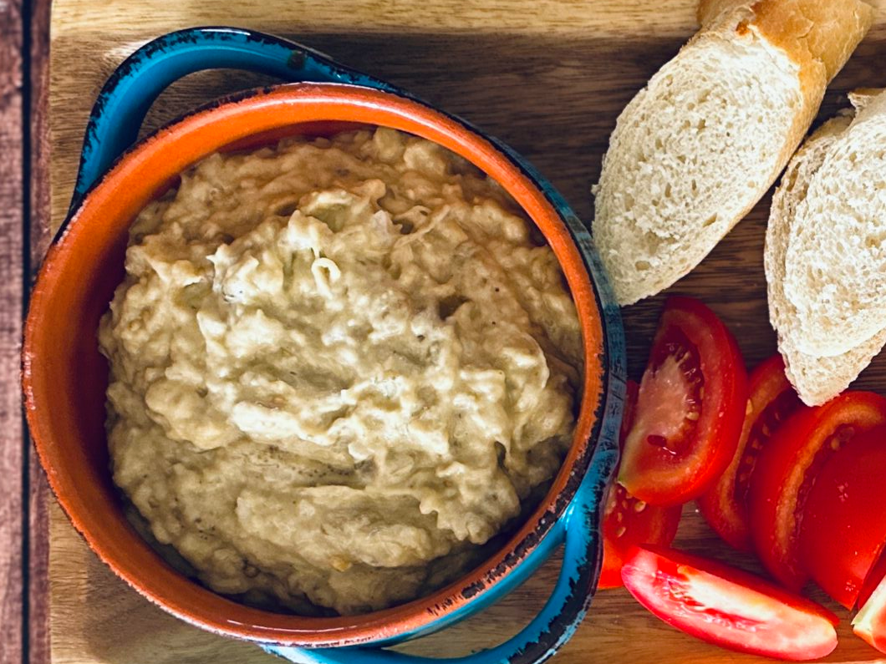

Vinete (Romanian Eggplant Salad)

I have a really weird family. Grandpa used to travel all around the world, and the whole family lived in many countries before settling in Chile when overseas stopped coming. The mix of cuisines in my house was really interesting: latin flavors mixing with european traditions and whatever we wanted to try for the next time we all ate together.
One of the dishes we always prepare is a dip. Salata de vinete (just Vinete in our house), a smoky and sour eggplant-based dip coming from Romania (same as grandpa). The preparation is kinda like making mayonnaise or alioli, but you can't use any metal utensils because it gets bitter really fast. So A little bit of elbow grease and patience is needed to create this delicious dish.
Ingredients
- 4 big eggplants (if using japanese nasu, use 8!)
- 1 lt neutral oil (you will not use everything but its better to have more than expected)
- 1/8 of an onion
- A splash of lemon juice
- Salt to taste
Instructions
- Burn the skin of the eggplants on an open fire. Your average burner works perfectly, but line it up with aluminum foil so the bits don't make a mess in your kitchen.
- After charring all of them, put the eggplants in a bowl and cover them with plastic wrap. This will make them sweat, so the skin is easy to peel and gets even smokier! Leave them rest for a couple of hours, overnight if possible.
- Before unwrapping them, cut finely cut the onion. It has to become almost a paste, so you can't munch on it but still feel like it's on the mix.
- Put the onions aside and unwrap and start peeling the eggplants. Discard the tops and add all the meat into a clean, non-metallic bowl. With a wooden spatula start to mash them.
- Making a motion like splitting them with the spatula, start adding the oil bit by bit. The constant mixing, mashing and "cutting" will start to make an unstable emulsion, so try to keep the rhythm and don't add too much oil at once, as it may cut.
- When you get a smooth paste, add the onions, the lemon juice and salt. Mix well and serve inmediately with crackers, fresh bread and cut tomatoes.